SKW
Sophia Köhler Website
https://sophia-koehler.de
The website I designed and coded for artist Sophia Köhler is intended as a space in which her interdisciplinary practice can unfold. A flexible system establishes connections between her diverse bodies of work, enabling them to be explored in a dynamic way. Working in series, her approach is reflected through image sliders that allow fragments to shift and reconfigure. Adopting her black-and-white visual language, the site functions not only as a presentation platform, but also as an evolving landscape of research.
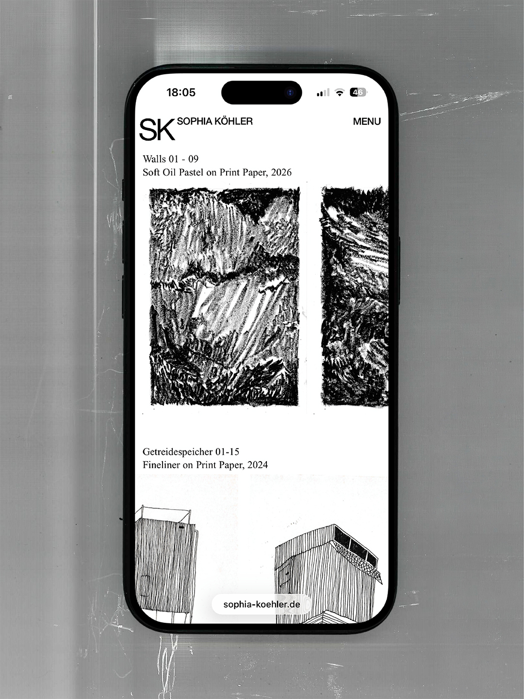
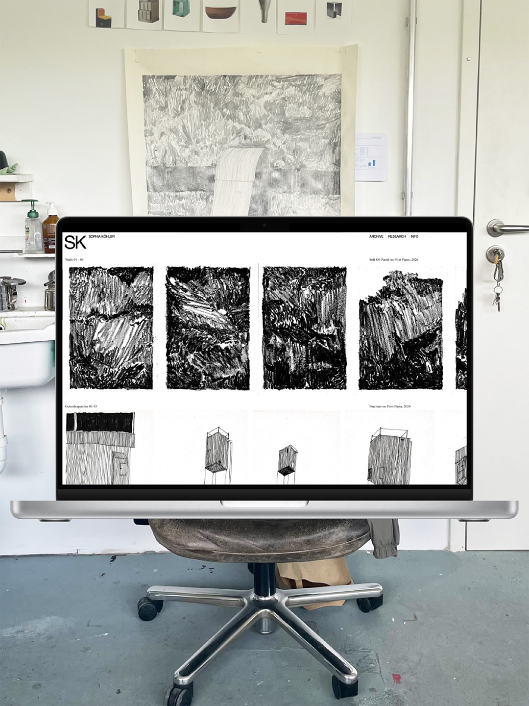
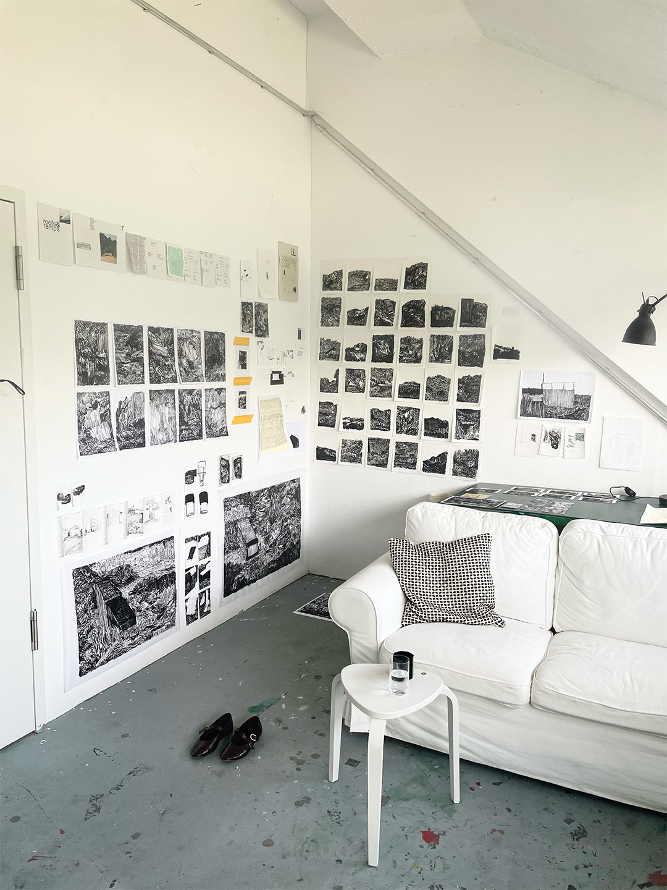
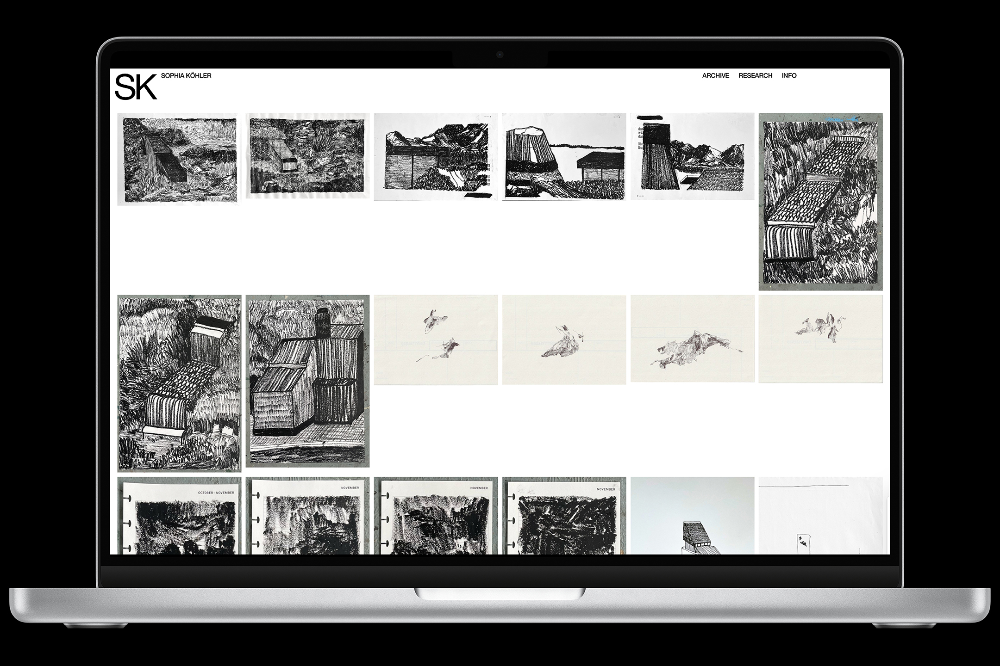
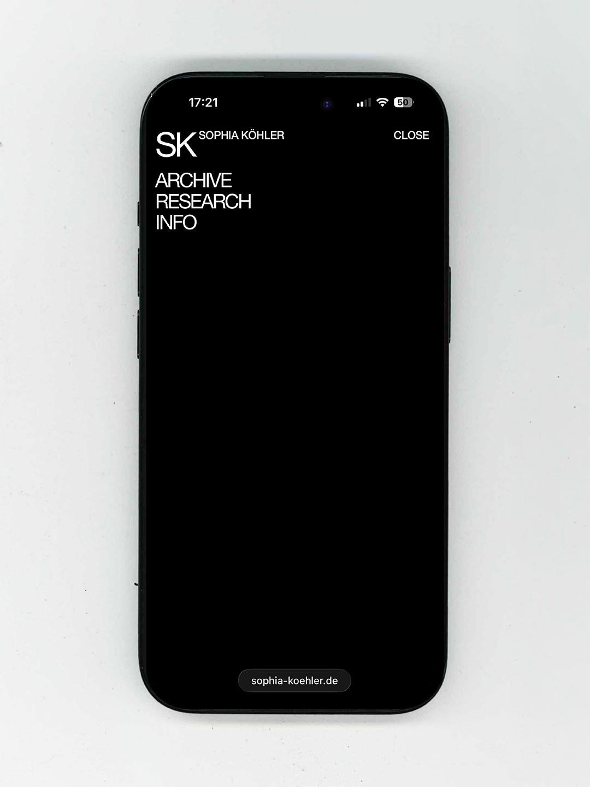
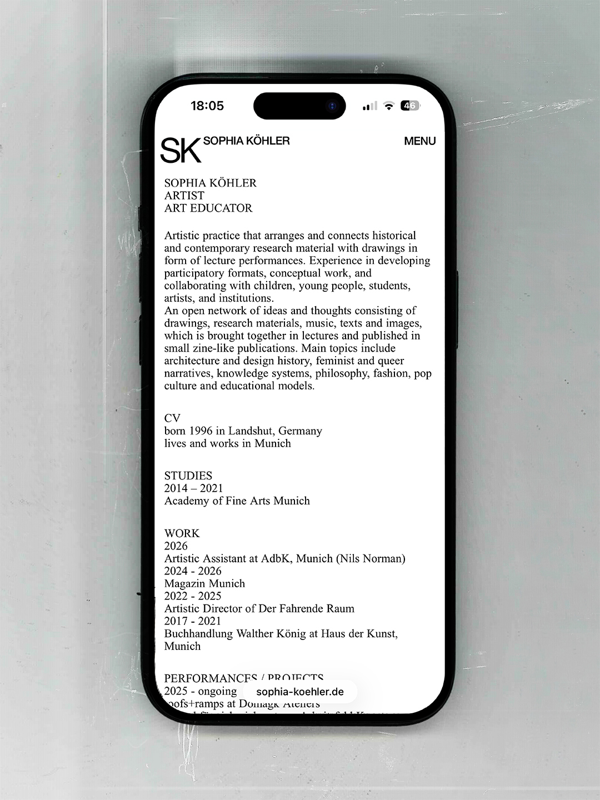
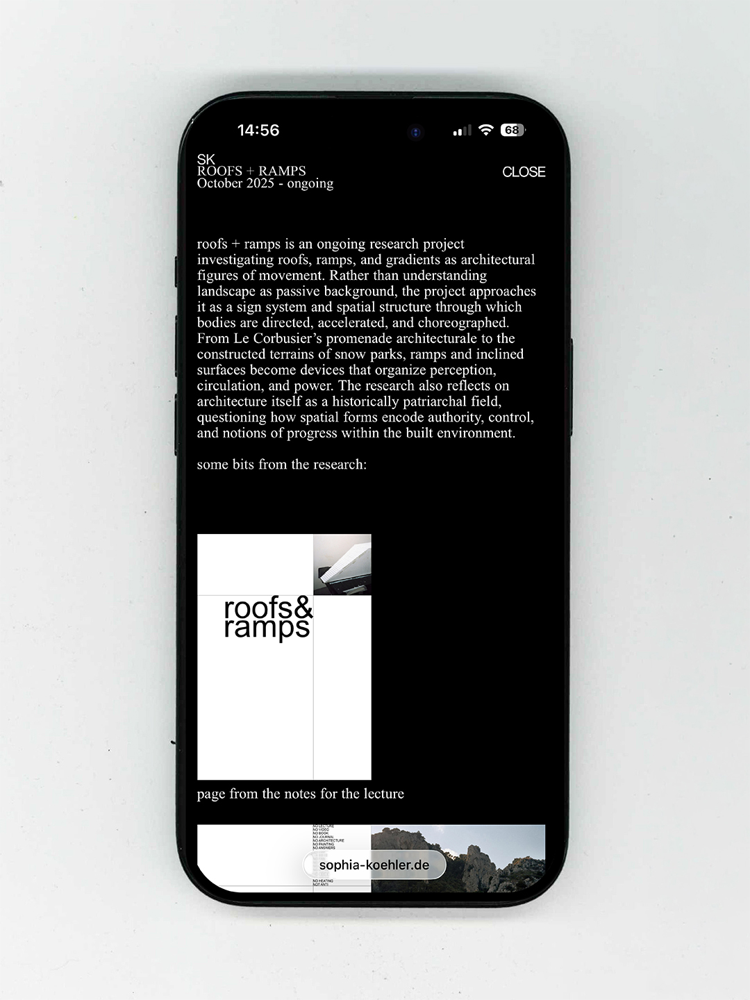
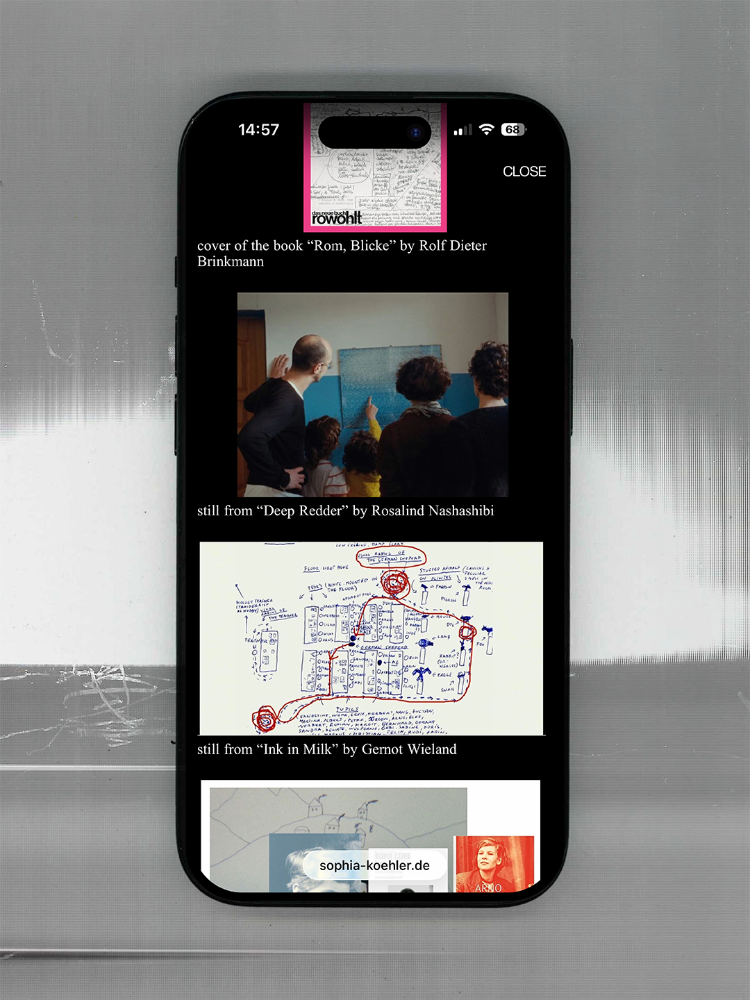
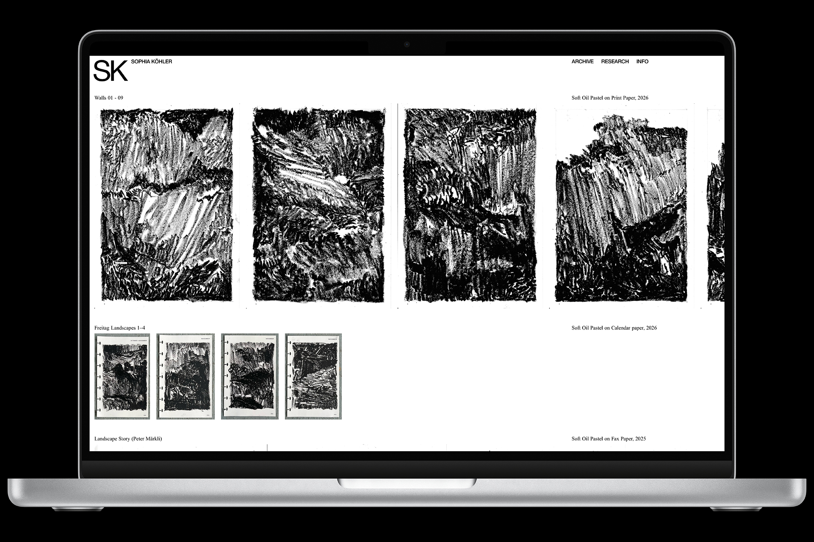
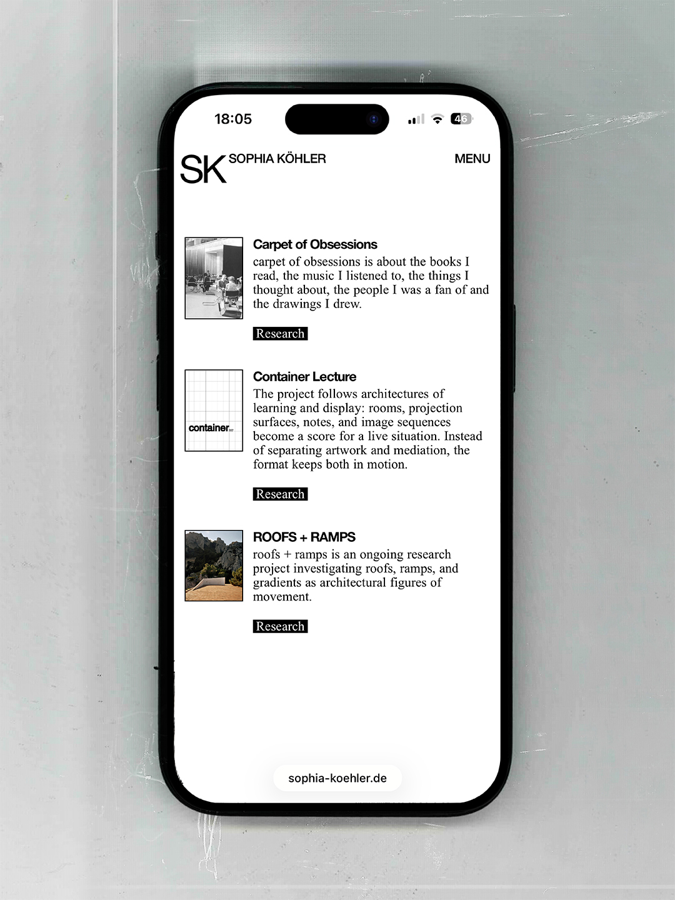
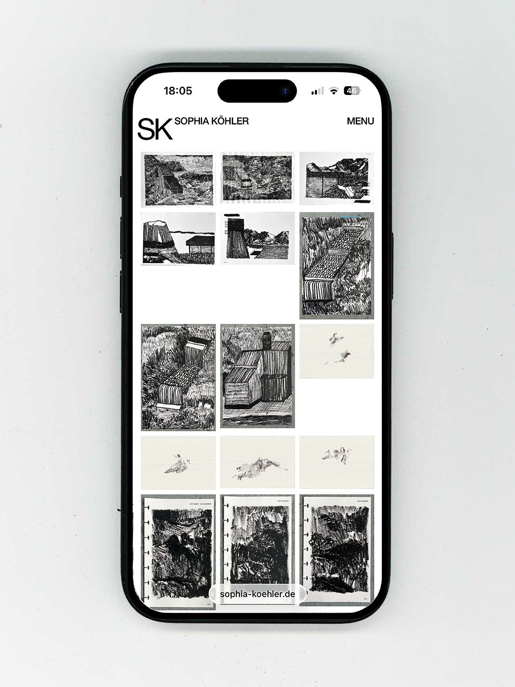
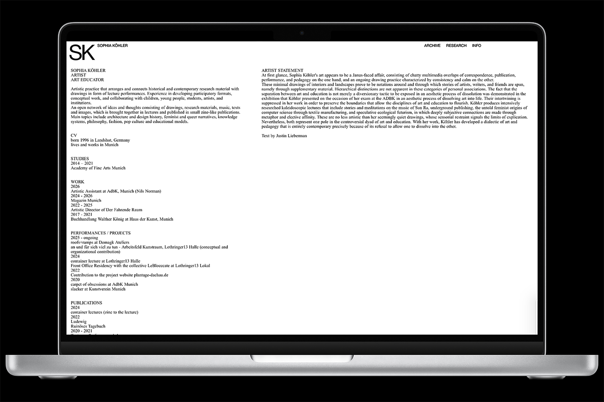